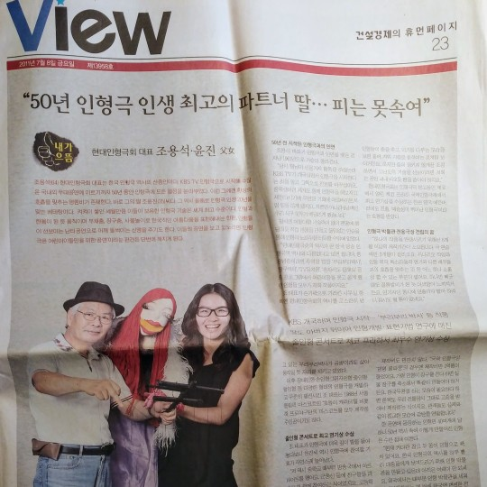
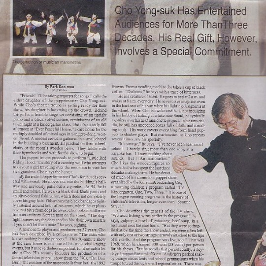
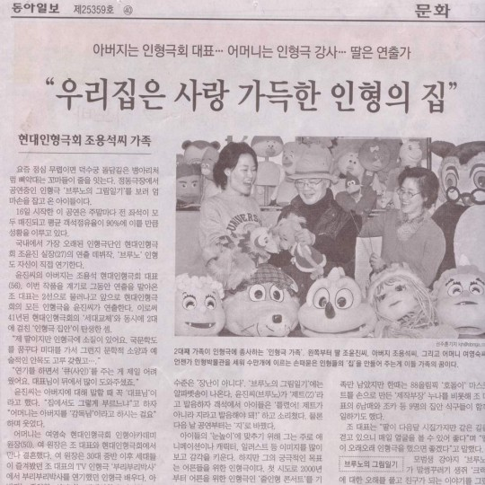

소개
현대인형극회는
1961년 KBSTV개국과 함께 창단되어 63년간 장인의 사명감을 가지고 어린이들을 위한 상상력과 창의력 향상을 위한 교육개발과 적용을 위해서 한 길로만 걸어온 현대인형극회는 한국 방송 인형극계를 이끌어 온 산 증인이다.
KBS 인형극 ‘부리부리박사’를 비롯해 ‘짱구박사’, ‘TV 유치원’, ‘혼자서도 잘해요’ 등… (중략)
연혁
- 1961
- - 현대인형극회 창립 KBS TV 개국과 함께 인형극 담당
- 1964
- - 셰익스피어 400주년 기념 …
수상내역
- 1976
- KBS-TV 프로그램 평가상 제25회 우수프로그램 평가상 …
방송출연
보도자료


